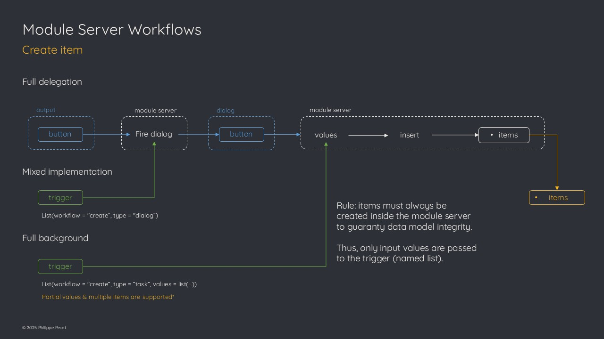
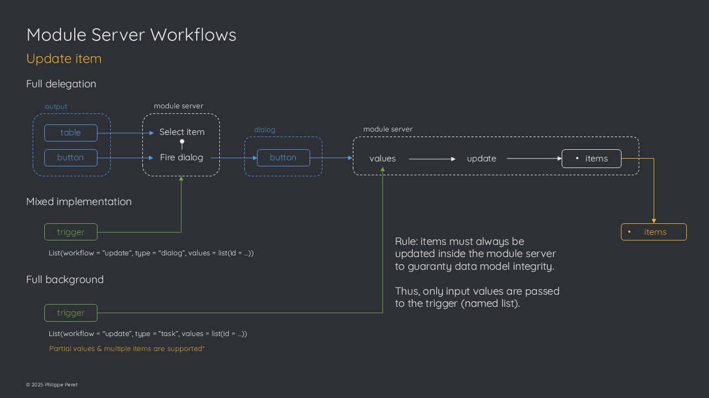
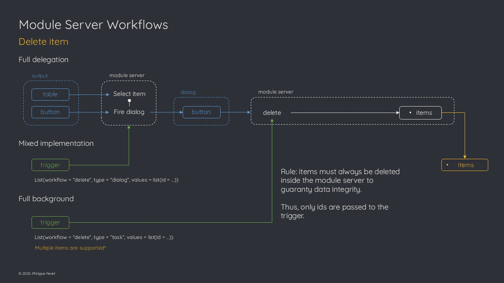

Item Workflows
Introduction
One of the purpose of the module server is to offer flexible implementation options.
To support this key capability, specific workflows had to be implemented when it comes to item management (create / update / delete operations).
This article focuses on these workflows and how to make use of them.
Create workflow
Full delegation
The standard way to create items is to implement the create button widget in the application UI.
When clicked by the user, the button will fire a creation dialog with the input form.
A confirmation button in this dialog is used to launch the creation process based on the input values and the item is inserted in the item table.
Mixed implementation
Another way is to fire the create item dialog directly from the main application server (it’s useful when you don’t want to implement the create button in the application UI).
An event can be sent to the module trigger parameter :
list(workflow = "create", type = "dialog")From there, the creation process will work the same way as it does after the create button is clicked.
Full background
The third and last option is to rely on a full server-side process.
This is particularly useful when the item creation does not rely on user input, or when you want to implement your own input form.
A specific event is used to trigger this back-end creation process:
The values are the ones to be used to create the new item.
The names in the list should fit with the names of the corresponding attributes (otherwise they will be dropped).
Partial value list is supported, meaning that the workflow will add missing attributes and take the values from the default defined in the data model.
This back-end process also supports creating multiple items at once. If so, elements in the list must have length 1 (all items will get same value for this attribute) or same length as the expected number of items. If not, the process will fail as it is not safe to guess whats the intention behind such a list.
In case existing ids are send along the list, the corresponding items will be skipped to avoid item duplication (it’s better to send a list without id and let the data model generate them).

Update workflow
In the same way as for the create workflow, the update one offers three types of implementations.
Full delegation
The standard process to update an item is to select it in the item table from the application UI.
This triggers the update button to be set visible. When the user clicks on it, the update dialog window is displayed and is initialized with the item’s values.
After the user confirms the update, the input values are used to update the corresponding attributes in the item table. As usual, these values are checked against the data model and replaced by defaults for example if the user lets an input empty.
Mixed implementation
When the item table is not implemented in the application UI, the update button cannot be used as it directly relies on the selected item.
In this case, it’s possible to use the trigger to fire the update dialog for a specific item:
From there, the update process will be same as in the first implementation.
Full background
If the update process does not rely on user input (for example to update an attribute linked to the lifecycle of the item such as progress or state), or if you want to implement your own custom input form, then it is possible to use the trigger in a full back-end update process.
The event is similar to the one used to create items, only the workflow is different:
The module will use the provided values to update the corresponding items.
Again, partial values are supported, meaning that if you provide an id with a single attribute, only this attribute will be updated for the corresponding item.
It is possible to force the update of a computed value attribute (with the data model default function) by including the name in the list, and set the value to NA. In this case, the data model will be used to define the default value.
Multiple items update is supported as well, with same rules as for the create workflow.
Note that this back-end process is the only way to update multiple items at once.

Delete workflow
Full delegation
The standard way to delete items is from the application UI.
Whenever one or several items are selected in the item table, the delete button is visible and can be used to fire the delete confirmation dialog.
Once the user hits the confirmation button in the dialog, the items are deleted from the item table.
Mixed implementation
Again here, when the item table is not implemented or if you want to have the delete operation available from a contextual element attached to a specific item (for example a marker’s popup on a map), the trigger can be used to fire the delete confirmation dialog.
User will hit the confirmation button and items will be removed from the item table.
Full background
In case you don’t want the confirmation dialog to pop up or need to use a server side process that is not directly linked to the UI, the trigger accepts a specific event that can be used to delete one or several items:
The module server will delete the items with corresponding ids.
Of course if some id(s) are not retrieved, they will be ignored.
It is recommended that your application will secure delete with some confirmation process as the trigger will not ask for any confirmation. This is particularly true when the autosave is set to TRUE as the item table will be saved as soon as it is modified.
